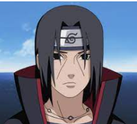
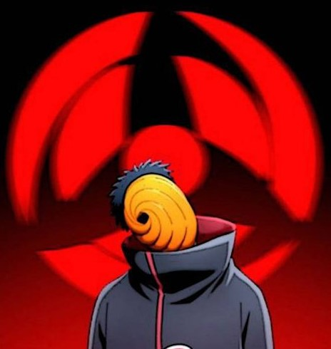

UCHIHA ITACHI

- Uchiha Itachi was a shinobi of Konoha's Uchiha clan
who served as an Anbu Captain. He later became an international criminal after murdering
his entire clan, sparing only his younger brother, Sasuke. He afterwards joined the
international criminal organisation known as Akatsuki, whose activity brought him into
frequent conflict with Konoha and its ninja , including Sasuke who sought to avenge
their clan by killing Itachi. Following his death, Itachi's motives were revealed
to be more complicated than they seemed and that his actions were only ever in the
interest of his brother and village, making him remain a loyal shinobi of
Konoha to the very end.
Know more
|
UCHIHA OBITO

Uchiha Obito was a member of Konoha Uchiha clan.
He was believed to have died during the
Third Shinobi World War, his only surviving legacy being the Sharingan he gave to
his teammate, Kakashi Hatake. In truth, Obito was saved from death and trained by
Madara, but the events of the war left Obito disillusioned with reality, and he
inherited Madara's plan to create an ideal world. Resurfacing under the names of
Tobi and Madara Uchiha himself, Obito subtly took control of the Akatsuki, using
them as a means to advance his machinations, eventually going public and starting
the Fourth Shinobi World War. However, towards the war's conclusion, Obito had a
change of heart and, as atonement, sacrificed his life to save the same world he
sought to replace.
Know more
|